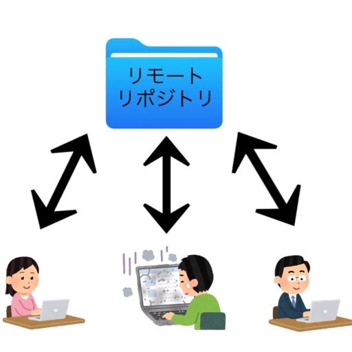
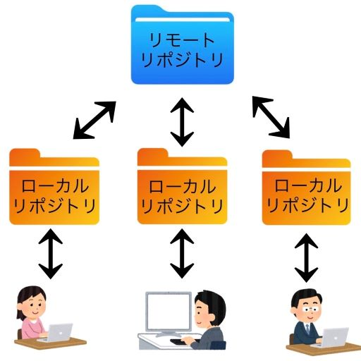
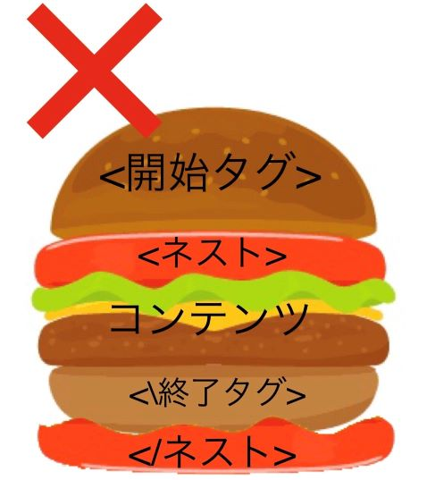

gitに関して
gitとは分散型のバージョン管理システムである。オフラインでも編集が可能であり、ファイルの管理を簡単にするシステム。
今までは編集前のファイルのコピーをとっておかないと、編集したファイルを編集前に戻すことは難しく、またファイル編集をするごとにコピーをとるとファイル管理が大変になってしまう。さらに、複数人で同じファイルを共有して作業している場合、いつどのような変更が行われたか把握できなかったり、誤って変更内容が消えてしまったりしてしまう。
イメージ図

gitの最大の特徴は「分散型」と言われるように、個々のパソコンに全ての変更履歴の入った完全なフォルダの複製を作成できるということだ。フォルダが貯蔵されているリモートリポジトリからフォルダのコピー（ローカルリポジトリ）を個々の手元に置き、自由に編集をすることができる。編集したローカルリポジトリを「プッシュ」させることでリモートリポジトリに反映させることができる。
イメージ図

- ファイルの変更履歴が管理できる。
- 任意の過去のファイルに戻ることができる。
- Excelファイルや画像などのあらゆるファイルを管理することができる。
- オンラインであればチームでファイルの共有ができる。
参照URL
【絶対理解できる】Gitとは？特徴やできることまとめ！
Gitとは-IT用語辞典
htmlに関して
htmlとは、ハイパーテキスト・マークアップ・ランゲージ（Hyper Text Markup Language）の略。つまり、コンピュータが理解できる文章構成の指示（マークアップ）をするための言語である。Web制作では、htmlを用いてホームページ上に表示したい情報を、コンピュータに指示することから始まる。
普段目にするWebページもhtmlでできている。Webページを開いた状態で画面を右クリックし、ページのソースを表示することで確認することができる。
要素とは
基本的に開始タグ、終了タグ、コンテンツの３つでできているWebページの一部である。<開始タグ>~のように要素名を山括弧で囲むことで、どこから要素が始まり、どこで要素が終わるのかを表している。コンテンツを開始タグと終了タグで挟むことでコンテンツを表示することができる。
要素の中に要素を入れることができる。これをネスト（または入れ子）という。その場合、要素は確実にほかの要素の中か外で開始し、終了する必要があるため注意が必要。


空要素と呼ばれる、コンテンツを持たない要素もある。画像を表す 要素などがある。こういった要素はコンテンツを囲むものではなく、その他の機能を果たすためのものである。そのため、終了タグを持たない。
要素などがある。こういった要素はコンテンツを囲むものではなく、その他の機能を果たすためのものである。そのため、終了タグを持たない。
属性
実際のコンテンツには表示しない要素に関する追加情報が含まれている。
属性の形式
- 開始タグの要素名との間に空白を開ける
- 属性名を入れ、等号を入れる
- 引用符（“”）で挟んだ属性の値を入れる
<要素名 属性名＝“属性の値”>のような開始タグとなる。
- !DOCTYPE html>のような文書型宣言。文書が正しく動作するための必須の前置き。
- head>と書くヘッダ要素。ページ閲覧者に表示するためのコンテンツではなく、検索エンジン向けのキーワードや説明書き、ページの見た目を変更するためのCSS、文字コードの宣言などを含むもの。
- title>と書くタイトル要素。ページを開いたときにブラウザーのタブに表示される。
- body>と書くボディ要素。Webページに表示したいコンテンツ。
- 見出し：h1からh6まであり、数字の小さいほうが大きく表示される。
- 段落：pで示す。
- リスト：li要素で示すがその中に1つ要素を加える必要がある。加える要素は２種類ある。箇条書きにするならばulで示す。数字で分けるならばolで示す。
- リンク：a要素の中にhref属性を追加し示す。a href=“URL”>~/a